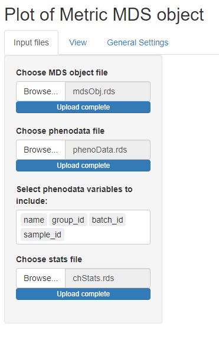
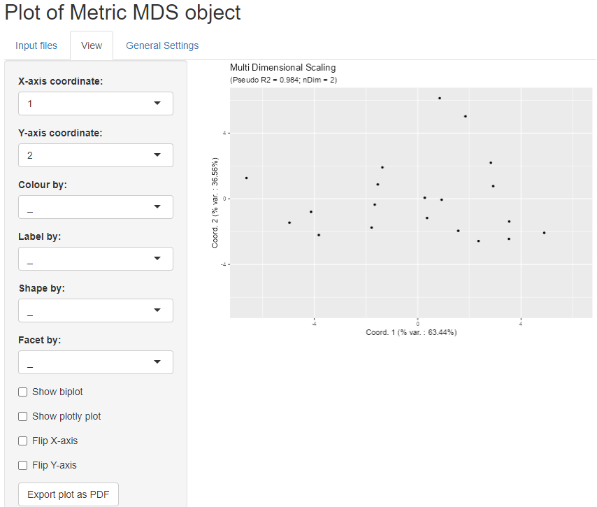
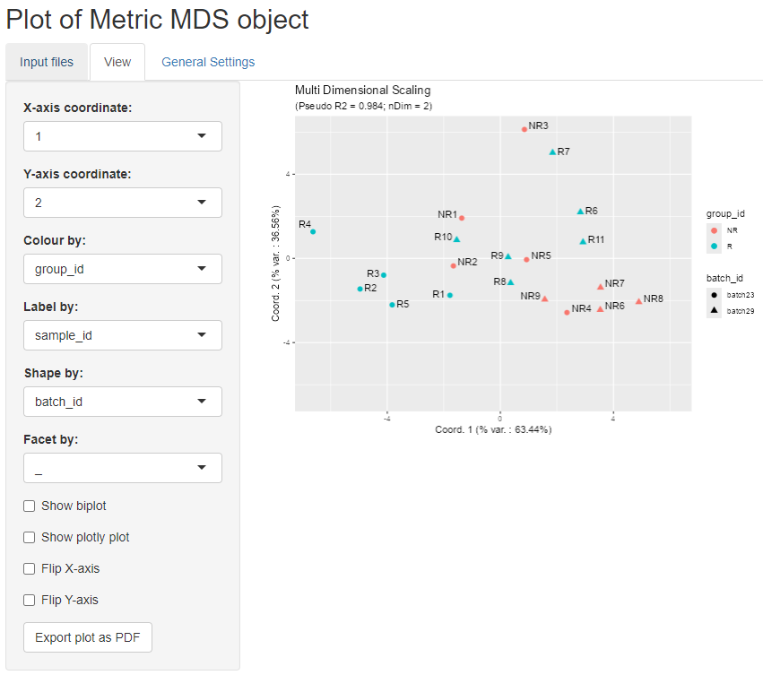

Visualization of Multi Dimensional Scaling (MDS) objects
Andrea Vicini
Philippe Hauchamps
MDSgui.RmdAbstract
This vignette describes the functionality implemented in the
MDSgui package. MDSgui provides support
for visualization of Multi Dimensional Scaling (MDS) objects. This
vignette is distributed under a CC BY-SA 4.0 license.
Installation and loading dependencies
To install this package, start R and enter (un-commented):
# if (!require("devtools", quietly = TRUE))
# install.packages("devtools")
#
# devtools::install_github(repo = 'https://github.com/UCLouvain-CBIO/MDSgui')We now load the packages needed in the current vignette:
Introduction
The MDSgui package implements visualization of Multi
Dimensional Scaling (MDS) objects representing a low dimensional
projection of cytometry samples. Such objects can be obtained using the
functionalities implemented in the CytoMDS package (Hauchamps et al. (2024)). For more information
see the CytoMDS
vignette. The visualization is realised via a Shiny app that allows
the user to interactively customise the plots depending on a series of
input parameters (see the CytoMDS::ggplotSampleMDS()
function for more details on the parameters).
Illustrative data
We load an illustrative mass cytometry (CyTOF) dataset from
(Bodenmiller et al. 2012), and provided in
the Bioconductor HDCytoData data package (Weber and Soneson (2019)). For more information
see CytoMDS
vignette.
BCRXL_fs <- HDCytoData::Bodenmiller_BCR_XL_flowSet()## see ?HDCytoData and browseVignettes('HDCytoData') for documentation## loading from cache## Warning in updateObjectFromSlots(object, ..., verbose = verbose): dropping
## slot(s) 'colnames' from object = 'flowSet'
BCRXL_fs## A flowSet with 16 experiments.
##
## column names(39): Time Cell_length ... sample_id population_idComputation of input files.
Next we compute the phenodata dataframe with experimental design
information, the MDS projection of the dataset as well as a list of
sample statistics. For a detailed description of each step see the CytoMDS
vignette.
phenoData <- flowCore::pData(BCRXL_fs)
additionalPhenoData <-
keyword(BCRXL_fs[[1]], "EXPERIMENT_INFO")$EXPERIMENT_INFO
phenoData <- cbind(phenoData, additionalPhenoData)
flowCore::pData(BCRXL_fs) <- phenoData
# Select markers
markerInfo <- keyword(BCRXL_fs[[1]], "MARKER_INFO")$MARKER_INFO
chClass <- markerInfo$marker_class
chLabels <- markerInfo$channel_name[chClass != "none"]
(chMarkers <- markerInfo$marker_name[chClass != "none"])## [1] "CD3" "CD45" "pNFkB" "pp38" "CD4" "CD20" "CD33" "pStat5"
## [9] "CD123" "pAkt" "pStat1" "pSHP2" "pZap70" "pStat3" "CD14" "pSlp76"
## [17] "pBtk" "pPlcg2" "pErk" "pLat" "IgM" "pS6" "HLA-DR" "CD7"
# arcsinh() transformation
trans <- arcsinhTransform(
transformationId="ArcsinhTransform",
a = 0,
b = 1/5,
c = 0)
# Scale transforming the raw data
BCRXL_fs_trans <- transform(
BCRXL_fs,
transformList(chLabels, trans))
# Calculating distances between samples
pwDist <- pairwiseEMDDist(
BCRXL_fs_trans,
channels = chMarkers,
verbose = FALSE
)
# Computing the MDS projection
mdsObj <- computeMetricMDS(pwDist, seed = 0)
show(mdsObj)## MDS object containing MDS projection (using Smacof algorithm) data:
## Nb of dimensions: 4
## Nb of points: 16
## Stress: 0.040668
## Pseudo RSquare: 0.981489
## Goodness of fit: 0.998346
# Computiong sample statistics
statFUNs = c("median" = stats::median,
"Q25" = function(x, na.rm) {
stats::quantile(x, probs = 0.25)
},
"Q75" = function(x, na.rm) {
stats::quantile(x, probs = 0.75)
},
"standard deviation" = stats::sd)
chStats <- channelSummaryStats(BCRXL_fs_trans,
channels = chLabels,
statFUNs = statFUNs)We save the newly created objects as .rds files. These files can be selected within the shiny app for visualization.
Visualization of the MDS projection
The MDSgui function run_app launches the
interactive Shiny app and the three tabs window in the figure below gets
opened. In the ‘Input files’ tab the objects can be loaded for
visualization. The plots are then shown in the ‘View’ tab while the
‘General settings’ contains more technical plot settings controls. All
the input files are expected to have .rds extension and at least a file
containing MDS object has to be loaded. Optionally a phenodata file
containing a phenodata dataframe and/or a file containing a list of
statistics for biplot visualization can be loaded.
 We can select the previously
created files and proceed with the visualization. Note that when a
phenodata file is selected a new control appears allowing to select only
a subset of variables (by default all are selected). These phenodata
selected variables will be the only ones available in the drop-down list
controls in the ‘View’ tab.
We can select the previously
created files and proceed with the visualization. Note that when a
phenodata file is selected a new control appears allowing to select only
a subset of variables (by default all are selected). These phenodata
selected variables will be the only ones available in the drop-down list
controls in the ‘View’ tab.
 We can now open the ‘View’ tab
to see the plot of the projection results. The controls on the side
allow to choose the projection axes, colour, label, or shape the points
according to phenodata variables, add biplot, show a plotly
plot for interactive plot exploration or flip axes.
 For example we can colour the points according to group_id and label the points according to patient_id as shown in the figure below.
 We can also add a biplot created based
on sample statistics by clicking on the biplot checkbox. The idea is to
calculate the correlation of the sample statistics w.r.t. the axes of
projection, so that these correlations can be represented on a
correlation circle overlaid on the projection plot. The desired
statistic can be selected from the drop down menu and it is possible to
show only the arrows that respect a selected length threshold.
In the example below, the chosen statistic is the median while the arrow
length threshold is 0.8.

Finally it is possible to display an interactive plotly
plot below the regular one by selecting the corresponding checkbox. We
can also add new plotly tooltips and highlight the
corresponding information for each point by hovering over them.

General settings
For completeness we show below the ‘General settings’ tab which
contains some general controls regarding e.g. points features, the
corresponding labels and biplot arrows. For more details see the
CytoMDS::ggplotSampleMDS() function parameters.

Session information
## R Under development (unstable) (2025-02-12 r87715)
## Platform: x86_64-pc-linux-gnu
## Running under: Ubuntu 24.04.1 LTS
##
## Matrix products: default
## BLAS: /usr/lib/x86_64-linux-gnu/openblas-pthread/libblas.so.3
## LAPACK: /usr/lib/x86_64-linux-gnu/openblas-pthread/libopenblasp-r0.3.26.so; LAPACK version 3.12.0
##
## locale:
## [1] LC_CTYPE=en_US.UTF-8 LC_NUMERIC=C
## [3] LC_TIME=en_US.UTF-8 LC_COLLATE=en_US.UTF-8
## [5] LC_MONETARY=en_US.UTF-8 LC_MESSAGES=en_US.UTF-8
## [7] LC_PAPER=en_US.UTF-8 LC_NAME=C
## [9] LC_ADDRESS=C LC_TELEPHONE=C
## [11] LC_MEASUREMENT=en_US.UTF-8 LC_IDENTIFICATION=C
##
## time zone: UTC
## tzcode source: system (glibc)
##
## attached base packages:
## [1] stats4 stats graphics grDevices utils datasets methods
## [8] base
##
## other attached packages:
## [1] MDSgui_0.1.2 CytoMDS_1.3.5
## [3] HDCytoData_1.27.0 flowCore_2.19.0
## [5] SummarizedExperiment_1.37.0 Biobase_2.67.0
## [7] GenomicRanges_1.59.1 GenomeInfoDb_1.43.4
## [9] IRanges_2.41.3 S4Vectors_0.45.4
## [11] MatrixGenerics_1.19.1 matrixStats_1.5.0
## [13] ExperimentHub_2.15.0 AnnotationHub_3.15.0
## [15] BiocFileCache_2.15.1 dbplyr_2.5.0
## [17] BiocGenerics_0.53.6 generics_0.1.3
## [19] BiocStyle_2.35.0
##
## loaded via a namespace (and not attached):
## [1] splines_4.5.0 later_1.4.1 filelock_1.0.3
## [4] tibble_3.2.1 graph_1.85.1 XML_3.99-0.18
## [7] rpart_4.1.24 lifecycle_1.0.4 Rdpack_2.6.2
## [10] doParallel_1.0.17 flowWorkspace_4.19.0 lattice_0.22-6
## [13] MASS_7.3-64 backports_1.5.0 magrittr_2.0.3
## [16] Hmisc_5.2-2 plotly_4.10.4 sass_0.4.9
## [19] rmarkdown_2.29 jquerylib_0.1.4 yaml_2.3.10
## [22] plotrix_3.8-4 httpuv_1.6.15 DBI_1.2.3
## [25] minqa_1.2.8 RColorBrewer_1.1-3 abind_1.4-8
## [28] ggcyto_1.35.0 purrr_1.0.4 nnet_7.3-20
## [31] pracma_2.4.4 rappdirs_0.3.3 transport_0.15-4
## [34] GenomeInfoDbData_1.2.13 gdata_3.0.1 ellipse_0.5.0
## [37] pkgdown_2.1.1.9000 codetools_0.2-20 DelayedArray_0.33.6
## [40] tidyselect_1.2.1 shape_1.4.6.1 UCSC.utils_1.3.1
## [43] lme4_1.1-36 base64enc_0.1-3 jsonlite_1.8.9
## [46] e1071_1.7-16 mitml_0.4-5 Formula_1.2-5
## [49] survival_3.8-3 iterators_1.0.14 systemfonts_1.2.1
## [52] foreach_1.5.2 tools_4.5.0 ragg_1.3.3
## [55] Rcpp_1.0.14 glue_1.8.0 gridExtra_2.3
## [58] pan_1.9 SparseArray_1.7.5 xfun_0.50
## [61] dplyr_1.1.4 withr_3.0.2 BiocManager_1.30.25
## [64] fastmap_1.2.0 boot_1.3-31 shinyjs_2.1.0
## [67] digest_0.6.37 R6_2.6.1 mime_0.12
## [70] mice_3.17.0 textshaping_1.0.0 colorspace_2.1-1
## [73] gtools_3.9.5 RSQLite_2.3.9 weights_1.0.4
## [76] tidyr_1.3.1 hexbin_1.28.5 data.table_1.16.4
## [79] class_7.3-23 httr_1.4.7 htmlwidgets_1.6.4
## [82] S4Arrays_1.7.3 pkgconfig_2.0.3 gtable_0.3.6
## [85] blob_1.2.4 RProtoBufLib_2.19.0 XVector_0.47.2
## [88] htmltools_0.5.8.1 bookdown_0.42 scales_1.3.0
## [91] png_0.1-8 wordcloud_2.6 reformulas_0.4.0
## [94] knitr_1.49 rstudioapi_0.17.1 checkmate_2.3.2
## [97] nlme_3.1-167 curl_6.2.1 nloptr_2.1.1
## [100] proxy_0.4-27 cachem_1.1.0 stringr_1.5.1
## [103] BiocVersion_3.21.1 parallel_4.5.0 foreign_0.8-88
## [106] AnnotationDbi_1.69.0 desc_1.4.3 pillar_1.10.1
## [109] grid_4.5.0 vctrs_0.6.5 promises_1.3.2
## [112] cytolib_2.19.3 jomo_2.7-6 xtable_1.8-4
## [115] cluster_2.1.8 htmlTable_2.4.3 Rgraphviz_2.51.0
## [118] evaluate_1.0.3 cli_3.6.4 compiler_4.5.0
## [121] rlang_1.1.5 crayon_1.5.3 smacof_2.1-7
## [124] ncdfFlow_2.53.1 plyr_1.8.9 fs_1.6.5
## [127] stringi_1.8.4 viridisLite_0.4.2 BiocParallel_1.41.0
## [130] nnls_1.6 munsell_0.5.1 Biostrings_2.75.3
## [133] lazyeval_0.2.2 glmnet_4.1-8 Matrix_1.7-2
## [136] bit64_4.6.0-1 CytoPipeline_1.7.0 ggplot2_3.5.1
## [139] KEGGREST_1.47.0 shiny_1.10.0 rbibutils_2.3
## [142] broom_1.0.7 memoise_2.0.1 bslib_0.9.0
## [145] bit_4.5.0.1 polynom_1.4-1